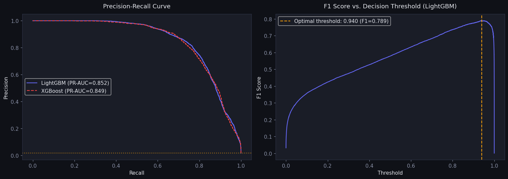
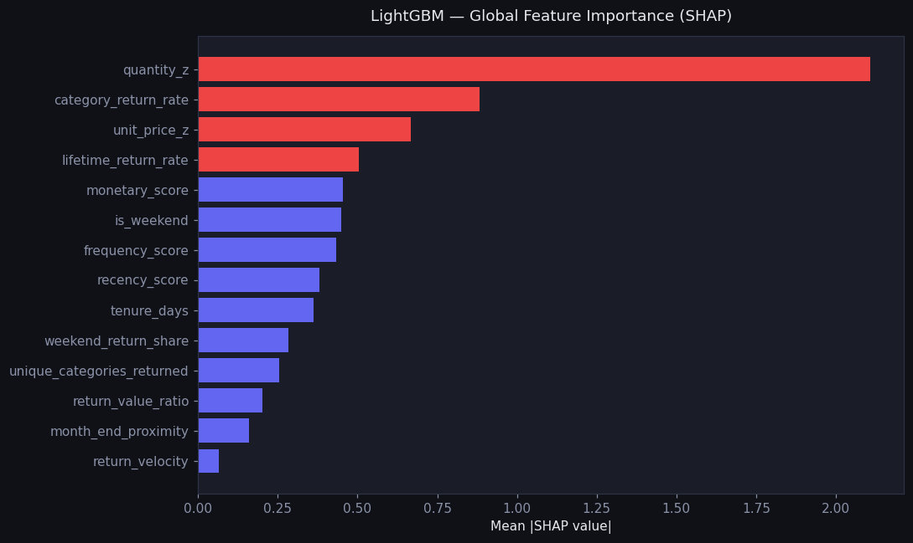
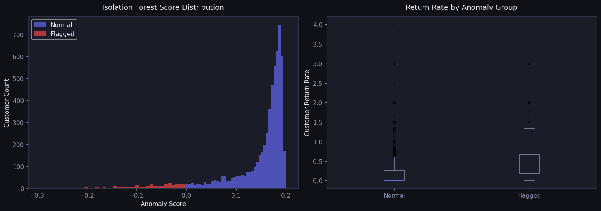
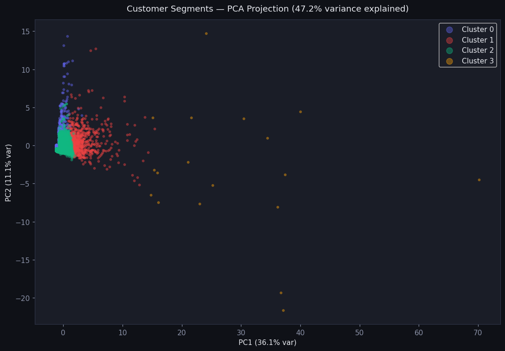
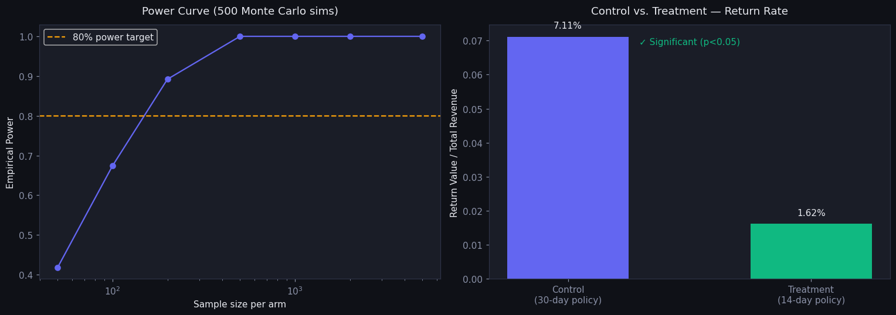
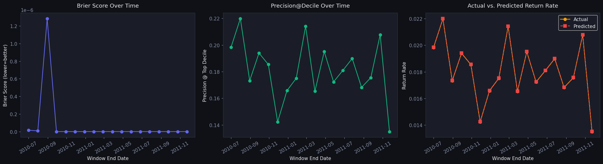

1Supervised · LightGBM
Return-likelihood classifier
Per-transaction P(return) at checkout. Trained on a strict temporal split (2009–H1 2011 → H2 2011) with point-in-time-safe history features. SHAP makes every score explainable.
U.S. retailers lost $101B to return fraud and abuse in 2023. Retail Returns Intelligence scores every transaction's return likelihood in real time, flags excessive returners without labels, segments customers for differentiated policy, and recommends substitutes that turn refunds into retained revenue.
A small fraction of customers drive a disproportionate share of returns through wardrobing, bracketing, serial returns, and policy abuse. The signal is in the transaction stream — but it usually gets read reactively, once the refunds have already cleared.
Source: National Retail Federation & Appriss Retail, 2023 Consumer Returns report.
This calls a live FastAPI backend running the trained models — real inference, not a mockup. Pick a real customer or enter your own transaction to get a return probability, risk tier, customer segment, anomaly flag, and the top SHAP factors driving the prediction.
Submit a transaction to see the model's scored output.
Temporal train/test split, point-in-time-safe features, threshold selection, explainability, and rolling-window backtesting. Every figure below is generated by the notebooks in the repo.






Is this transaction risky right now? Is this customer a systematic returner? How should policy differ across the base? And how do we win the sale back? Each question gets its own model.
Per-transaction P(return) at checkout. Trained on a strict temporal split (2009–H1 2011 → H2 2011) with point-in-time-safe history features. SHAP makes every score explainable.
Flags systematic returners from customer-level behavior with no labels required. Validated against a top-decile return-value-ratio heuristic.
k=4 on RFM + return features → Premium Loyal · Healthy Browser · At-Risk · Returner. Turns one blunt return policy into four targeted ones.
Content embeddings (sentence-transformers) blended with implicit ALS. At the return moment, surfaces alternatives to retain revenue instead of refunding it.
Temporal leakage is the trap here. Lifetime return rate, return velocity, and avg days-to-return must be computed using only transactions before the one being scored. All features are point-in-time safe, and the split is strictly chronological — no future leaks backward.
The modeling is wrapped in the scaffolding a real deployment needs: orchestration, experiment tracking, tests, a serving API, and a pipeline that's proven to scale.
Prefect 2.x runs the weekly ingest → feature → train → score flow with retries and observability.
MLflow logs params, metrics, and SHAP artifacts across all four model runs — reproducible comparisons, not one-off cells.
The same feature logic runs in PySpark on Databricks with a medallion architecture: Bronze → Silver → Gold.
FastAPI on Render with typed Pydantic schemas and a /health check. The demo above hits it live.
A pytest suite covers the API contract, score schema, customer profile, substitutes, and feature-matrix shape.
Feature aggregations prototyped in DuckDB — CTEs, window functions, and RFM rollups before they hit the pipeline.